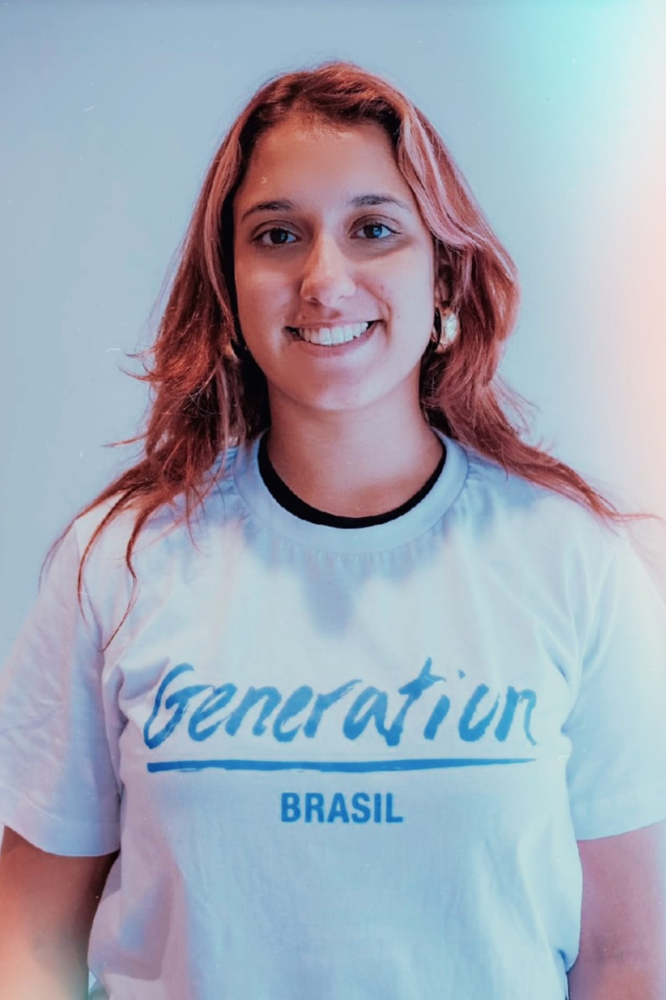

Sobre a Priscilla:
Olá, Sejam Bem vindos ao meu perfil. Sou uma entusiasta da programação Java. Atualmente, estou mergulhando de cabeça nos estudos de programação, buscando aprimorar minhas habilidades e expandir meus conhecimentos. Capaz de aprender coisas novas com facilidade, ter entusiasmo e convicção para enfrentar as adversidades e fácil relacionamento interpessoal, trabalhando facilmente em equipe. Tenho sólido conhecimento em Marketing Digital, precisei estudar essa área para divulgar minha marca no ramo da beleza, onde foi a profissão que fiquei mais tempo atuando, por esse desejo crescente decidi realizar uma faculdade em Marketing.
Devido ao meu contato com o meio academico acabei criando um networking com pessoas desenvolvedoras e com a area de tecnologia, onde surgiu uma paixão pela area, e acabei mudando de direçao.Minha jornada nesse desafio tem sido repleta de projetos desafiadores e aprendizados enriquecedores. Estou constantemente buscando oportunidades paraaplicar meus conhecimentos em situações do mundo real e enfrentar desafios que me permitam crescer profissionalmente.
Possuo um perfil analítico que me permite passar ideias com mais assertividade. Como Desenvolvedora FullStack tenho habilidade em trabalhar em equipe cumprindo os prazos acordados, e isso me permite ser mais produtiva e entregar resultados de acordo com as necessidades da empresaEstou aberto a oportunidades de estágio ou colaboração em projetos que me permitam contribuir e aprender ainda mais.
